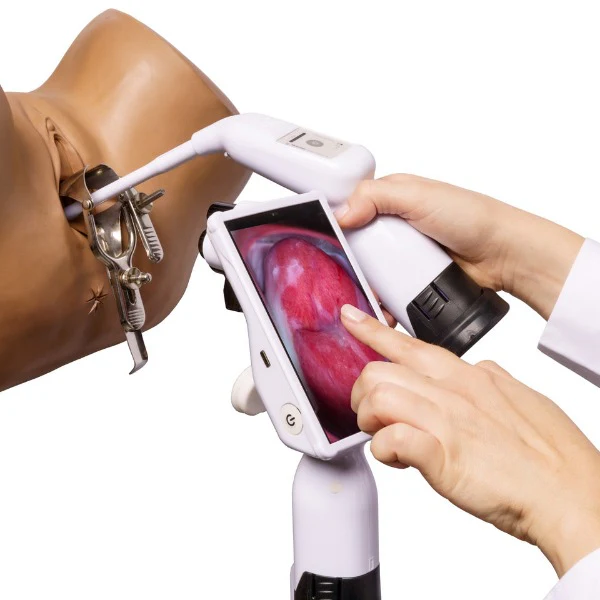
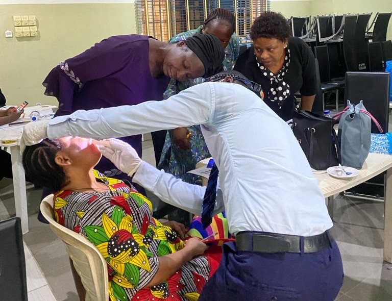
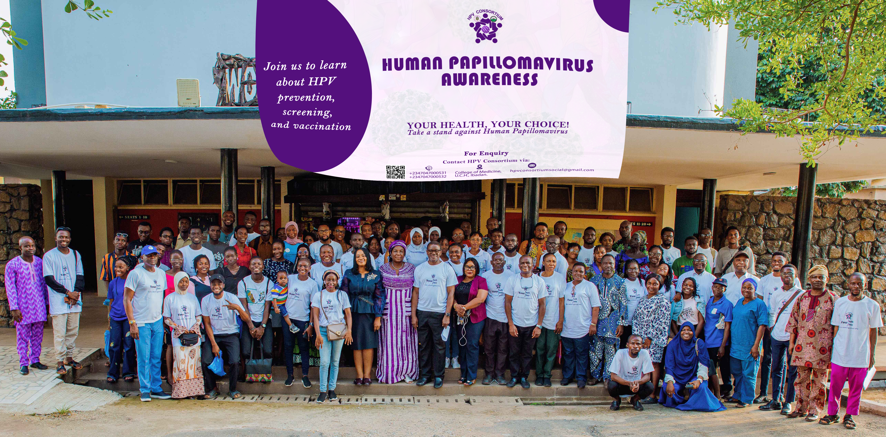

Our Services
Clinical Research

Clinical research is a core service of the HPV Consortium, supporting its mission to advance knowledge and improve strategies for the prevention, diagnosis, and treatment of HPV and its related diseases. Through well-designed studies, the Consortium generates critical data on HPV infection, associated cancers and the effectiveness of various treatment options. This research helps identify gaps in care, evaluate new technologies, and inform policies that enhance public health outcomes. The HPV Consortium conducts its clinical research ethically and professionally,, adhering to national and international guidelines while ensuring the safety, confidentiality, and rights of participants. By integrating research into its programs, the Consortium contributes to evidence-based practices that improve the health and well-being of people in diverse settings.
Oral Examination
Oral examination is one of the important services provided by the HPV Consortium as part of its comprehensive approach to HPV-related disease prevention and early detection. This procedure involves a thorough inspection of the mouth, including the lips, tongue, gums, cheeks, and throat, to identify any abnormalities or lesions that could be linked to HPV infection or other oral health concerns. The service is particularly relevant for the early detection of precancerous changes or signs of oral and oropharyngeal cancers. Conducted by trained healthcare professionals, oral examinations are quick, non-invasive, and essential for ensuring timely referral and management when necessary. Through this service, the HPV Consortium strengthens its commitment to promoting overall health and reducing the burden of HPV-associated diseases.

HPV-Associated Cancer Screening and Testing
HPV-associated cancer screening is a key service offered by the HPV Consortium to promote the early detection and prevention of cancers linked to HPV. This screening targets cancers of the cervix, oropharynx, and other anogenital sites, focusing on identifying precancerous changes before they progress. The service combines methods such as HPV DNA testing, visual inspection, colposcopy, and oral examination using VELScope, depending on the cancer site and risk profile. By offering comprehensive and accessible screening, the HPV Consortium helps reduce the incidence and mortality of HPV-related cancers. The screening is provided by trained healthcare professionals, ensuring accurate results, appropriate follow-up, and treatment where needed. This service aligns with the Consortium’s mission to enhance public health through integrated, evidence-based interventions.
Colposcopy
Colposcopy is one of the vital services provided by the HPV Consortium to support the early detection and management of cervical abnormalities linked HPV infection. This procedure involves the use of a specialized magnifying instrument called an handheld digital colposcope to closely examine the cervix for presence of precancerous or cancerous lesion. It is typically offered to women who have HPV positive results. By identifying precancerous or suspicious lesions early, colposcopy enables timely intervention, helping to prevent the progression to cervical cancer. The HPV Consortium integrates this service into its broader mission of enhancing cervical cancer prevention through comprehensive screening, diagnosis, and treatment. The service is delivered by trained healthcare professionals, ensuring accuracy, patient comfort, and appropriate follow-up care.

Treatments

Thermal ablation is one of the key treatment services offered by the HPV Consortium as part of its commitment to cervical cancer prevention. This procedure uses controlled heat to destroy abnormal or precancerous cells on the cervix that may result from persistent HPV infection. It is a safe, effective, and quick outpatient treatment, typically recommended for women diagnosed with cervical precancerous lesions following screening and colposcopy. Thermal ablation is particularly suitable for low-resource settings, as it does not require electricity or complex equipment. Loop Electrosurgical Excision Procedure (LEEP) is one of the essential treatment services provided by the HPV Consortium to manage cervical precancerous conditions. LEEP involves using a thin wire loop charged with an electrical current to remove abnormal tissue from the cervix. This procedure is typically recommended for women with high-grade cervical lesions identified through screening and colposcopy. LEEP not only removes the abnormal cells but also allows for laboratory evaluation of the excised tissue to confirm the diagnosis and ensure complete treatment. The HPV Consortium delivers these treatments option as part of her comprehensive cervical cancer prevention program, ensuring that patients receive accurate diagnosis, effective treatment, and proper follow-up care.. These intervention plays a vital role in reducing the risk of progression to cervical cancer, aligning with the Consortium’s goal of improving women’s health through accessible and effective treatment solutions
Task Shifting Training
Task-shifting training is one of the strategic services provided by the HPV Consortium to expand access to HPV prevention, screening, and treatment. This program equips nurses, midwives, community health workers, and other non-physician healthcare providers with the knowledge and skills needed to deliver essential HPV-related services safely and effectively. The training covers areas such as cervical cancer screening, colposcopy, thermal ablation, LEEP, oral examinations, and client counseling. By decentralizing these services through task shifting, the Consortium helps address workforce shortages and strengthens healthcare delivery, particularly in low-resource settings. This initiative aligns with the HPV Consortium’s mission to build sustainable capacity and improve health outcomes through innovative, community-based approaches.

Sensitization and Awareness Programs

Sensitization and awareness programs are integral services provided by the HPV Consortium to promote knowledge and positive attitudes toward the prevention and control of HPV-related diseases. These programs involve organized community outreach, school-based campaigns, health facility engagements, and the use of print, electronic, and social media to share accurate information about HPV, its modes of transmission, and its link to cervical and other cancers. The initiatives are designed to encourage uptake of screening, vaccination, and treatment services, while addressing myths, misconceptions, and stigma surrounding HPV and associated conditions. By targeting women, adolescents, caregivers, healthcare workers, and community leaders, the programs help foster informed decision-making and health-seeking behavior. Through sensitization and awareness efforts, the HPV Consortium advances its mission of reducing the burden of HPV-associated cancers and improving public health outcomes.
Laboratory Research
Scientific research is a core component of the services offered by the HPV Consortium. The Consortium is actively engaged in advancing knowledge on HPV infection, HPV-related diseases, and other sexually transmitted infections through high-quality, evidence-based research. One of the key facilities supporting this mandate is the open-access research laboratory, which is equipped to support a wide range of molecular and epidemiological investigations. This laboratory provides an enabling environment for researchers, both internal and external collaborators to conduct studies involving sample analysis, biomarker discovery, diagnostics validation, and translational research. By facilitating independent and collaborative research, the laboratory strengthens the evidence base needed for informed policy-making and improved public health outcomes in HPV prevention and control.